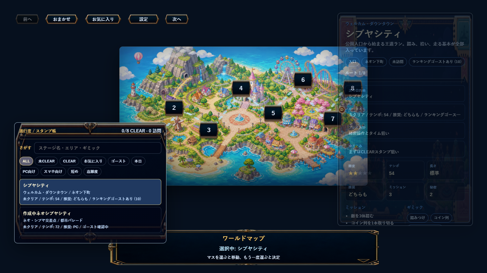
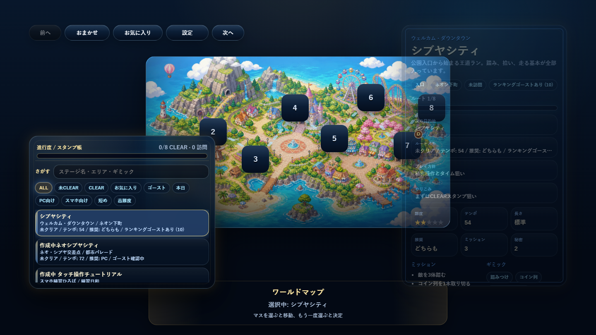
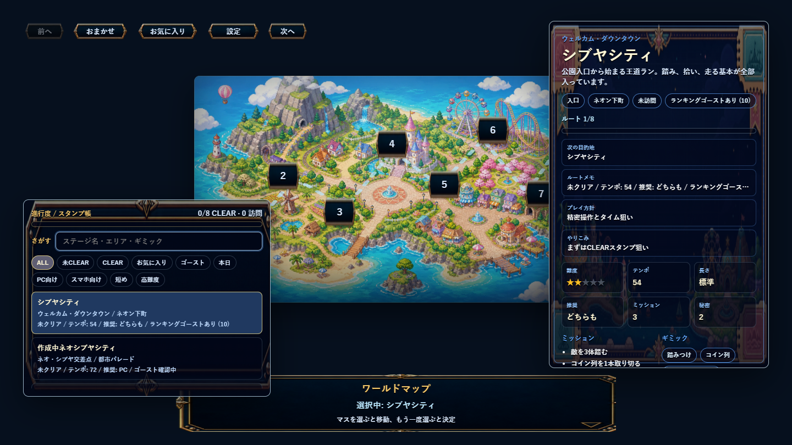
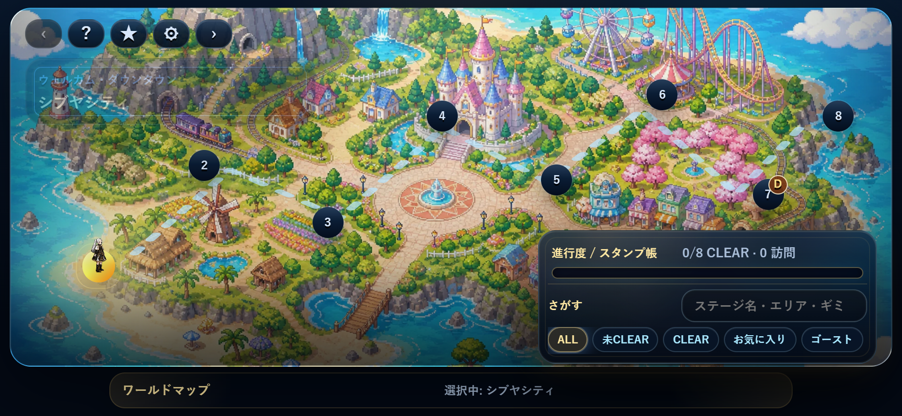
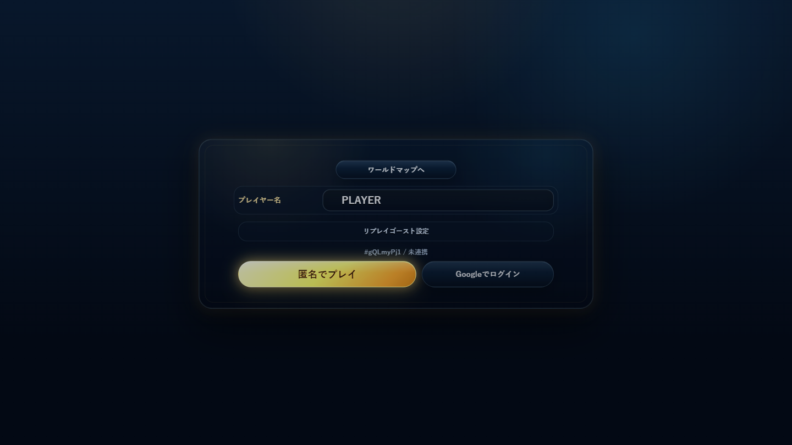

クリア後アクションボタン
BeforePhaserのテキストに背景色を付けた直線的な見た目だった。
After角丸パネル、内枠、アクセントバー、押下演出を持つ専用Canvasボタンに変更。
似た修正は個別件数にせず、20カテゴリにまとめた。v0.1.397では古い金額縁の印象を抑え、満足教の金をアクセントにした今風スマホゲームUIへ全体を寄せた。





BeforePhaserのテキストに背景色を付けた直線的な見た目だった。
After角丸パネル、内枠、アクセントバー、押下演出を持つ専用Canvasボタンに変更。
Beforehoverやpressが薄く、押せるものと飾りの差が弱かった。
After浮き上がり、押し込み、発光を共通化して操作可能感を強化。
Before黒い面に枠が乗る印象で、ゲーム世界の素材感が弱かった。
Afterガラス調の奥行き、内側ハイライト、控えめなぼかしを追加。
Beforeマップ画像とUIパネルの境界が単調だった。
Afterマップボードの外枠、内側の光、下方向のシェードを強化。
Before並んだボタンが板状で、現在のゲームテーマに馴染み切っていなかった。
After押下・hoverの統一演出と軽い影で、ゲーム内操作ボタンらしくした。
Before情報が等間隔に積まれ、進行度の見せ場が弱かった。
After進行度部分を軽く区切り、バーの発光と背景階層を調整。
Before細いバーがUIの中に埋もれやすかった。
After高さ、内側影、グラデーションを調整して状態表示として読めるようにした。
Before入力欄が板画像に頼っていて、フォーカス状態が弱かった。
After内側影、境界線、フォーカスリングを追加。
Before小さなタグが並ぶだけで、選択中の気持ちよさが弱かった。
After内側ハイライトと選択中の発光を足し、押せるチップとして整理。
Before行がただの暗い箱で、視線の入口が少なかった。
After左アクセントバー、行背景、選択中の光を追加。副作用で潰れた文字高も修正。
Before情報量の多い透明カードで、背景に沈みやすかった。
After背景階層とタイトル発光を調整し、スマホ横では詳細を畳んだ。
Before横長素材に文字とボタンが置かれているだけに見えた。
After枠、内側光、STAGEラベルを足して、決定前の演出として独立させた。
Beforeノードは見えるが、マップ上の駒としての浮遊感が弱かった。
After影、外周光、ラベル枠を足し、マップ上の選択対象として読みやすくした。
Before入力行がただ並び、フォームっぽさが強かった。
After行背景と薄い枠を足し、ゲーム内の設定札として見えるようにした。
Beforeファイル読込とランキングゴーストが混ざって見えた。
Afterパネル化して詳細設定のまとまりを作り、開始画面の密度を整理。
Beforeプレビュー画像が矩形で置かれ、保存画面の特別感が薄かった。
After画像枠、影、モーダル背景を整え、撮影結果を主役にした。
Before表の行が装飾はあるが同じ重さに見えた。
After表面、行影、現在スコアの発光を足して順位情報の階層を強化。
BeforeGoogle連携や共有がUIの一部として馴染み切っていなかった。
After共通ボタン演出とパネル質感を適用し、ランキング画面内の導線に統一。
Before右上の小ボタンが個別に浮き、ゲーム画面上で少し素っ気なかった。
After薄い背景トレイとアイコン影を足し、邪魔しない操作群としてまとめた。
Before仮想ボタンが機能優先で、画面上の質感が他UIと離れていた。
Afterジョイスティック、ボタン、レイアウトパネルに同系統の透明感と発光を適用。